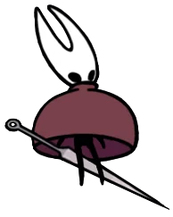

NullPageGh0st
Jsem náplava z jaderky, která momentálně studuje magisterský obor Počítačová bezpečnost. Na jaderku jsem přišla z obchodní akademie a zažívala jsem tak dlouhou dobu krušné časy s matematikou a fyzikou. Stejně random jako je můj výběr škol jsou i mé zájmy:
- Hraní
- Opravování nefunkčních myšek a klávesnic
- Flipper zero
- Kreslení
- Háčkování
- + Jsem veliký Silksong enjoyer
Nápady
Jelikož můj side gig je prodávání obrázků a háčkovaných plyšáků na festivalech, chtěla bych se věnovat projektu, který mi trochu ulehčí život. Jelikož si nejsem schopná spolehlivě vést "sklad" abych měla přehled co se jak kde prodalo. Chtěla bych si navrhnout nějakou smol aplikaci, která se společně s mobilem nebo čtečkou čárových/qr kódů o tohle postará za mě. Kromě evidence bych chtěla, aby bylo možné prodeje interpetovat podle různých kritérií a zjišťovat tak spojitosti s prodejem různého zboží na různých festivalech.
Myslím, že bych něco takového ocenila jak já tak i moji kolegové z artist alley. Je dost možné, že něco takového už existuje a pravděpodobně mají i propojení s terminálem a další cool věcičky, ale občas mám v oblibě vynalézt znovu kolo, i když vím že bude celkem hranaté.
Kontakt:
VEdWMGN5QmtZVzVqWlN3Z2MyaGhiR3dnZDJVL0lFaHZjR1VzSUhsdmRTQnNhV 3RsSUhOaGJITmhMaUJOWldWMElHMWxJR0YwSUhSb1pTQjNhR2wwWlNCaWIyRnlaQzQ9
99 3b e0 e7 0f 97 76 d3 15 22 d2 d0 db 92 ab d0
